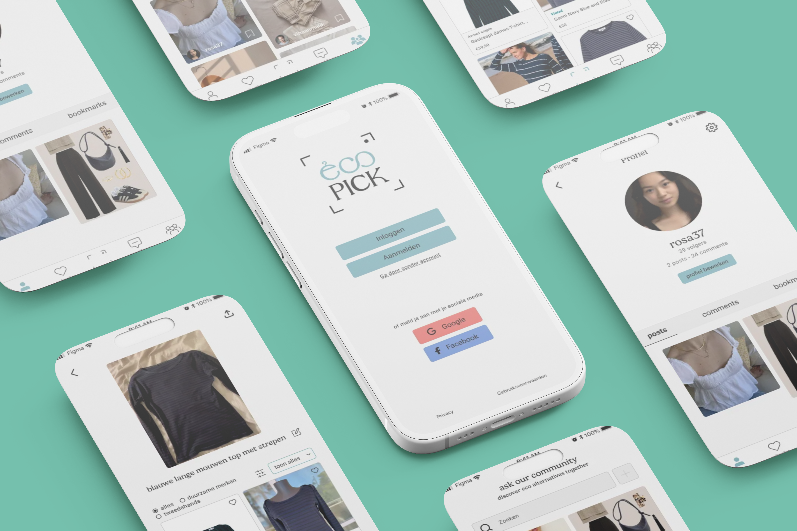
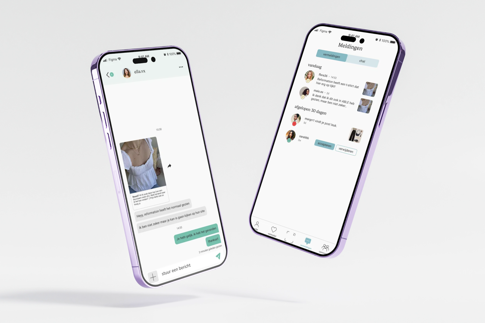

Context
For Lab1 around sustainable fashion I developed a concept app. Ecopick responds to the growing demand for sustainable fashion by giving users a low-threshold way to discover alternatives that are better for people and the planet.
Uitdaging
Many consumers want to shop more sustainably, but it is hard to find stylish and affordable alternatives. The market is fragmented, labels are unclear and fast fashion remains the default. The challenge was to make the sustainable choice feel simple and intuitive.
Oplossing
With Ecopick, users upload a photo of a clothing item and receive sustainable alternatives through AI image recognition. The app combines second-hand platforms, sustainable brands and a community where users can share tips and discoveries.
The concept is designed to stay scalable through affiliate links and clear product flows.


Mijn rol
I handled the concept development, branding direction and UX/UI decisions. The project taught me how to translate an abstract sustainability idea into a clear, actionable experience.
I also refined my approach to validation and iteration by testing what felt clear and what needed simplification.
Reflectie
Ecopick showed me how large the gap can be between desire and feasibility. Many people want to shop more sustainably, but the barriers are high. By connecting the concept to AI and affiliate marketing, I could turn that idea into something more realistic and scalable.
The project also reinforced how important concrete feedback and iteration are when shaping a concept.